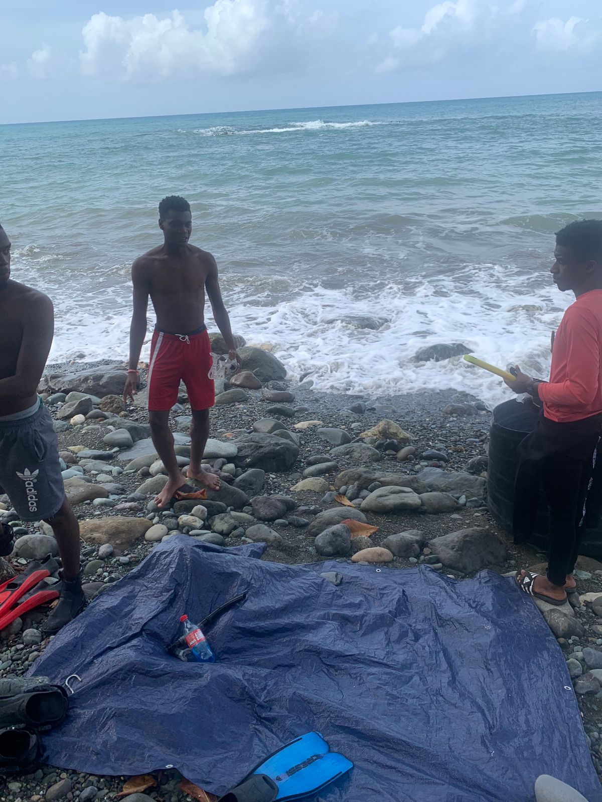

Trip to Bowden
So about a week ago, on February 11, 2023, I went on a dive trip with my team at Kee Farms. Here is a little bit of that story.
The Goals
At Kee Farms, to put it simply, we grow marine products like seaweed. However, we are still in the learning process. Our first batch of seaweed was depleted. So we needed a new starting crop to start growing. This meant taking a team out into the wild to find and gather some wild seaweed. Ideally, we wanted the same species of seaweed we had been growing before. Right now, we are focusing on a red seaweed known as Gracilaria . Gracilaria is a useful and popular red seaweed. Different species of Gracilaria are grown in other parts of the world. Here in Jamaica, we call it “irish moss” and traditionally for it, but our company is among the first to farm it. Here you can see some of the Gracilaria from our first round of collection dives. This specific species is called Gracilaria domingensis.


The Start
I’ll be honest. I had mixed feelings about this trip to start. Our first batch of seaweed came from a site named White Horses in St. Thomas. Its called that because the waves crashing look like..well..white horses. In other words, the water gets pretty rough. The roads to and from that site are pretty rough in their own right. The first trip was pretty rough in its own right. The second trip to White Horses was even worse. That time, the other divers and I had gotten into a mess. We collected no seaweed and almost got ourselves seriously hurt. It was a textbook case of horrible conditions. Visibility was less than three feet, surge was rough and the current pushed us towards rocks with some serious force.

But as the leader for the last dive, my team and I made sure we analyzed our loss(after a beer) ad figured out what we could do better. One of the major steps was to reach our dive site early, before the water picked up for the day. We had tried to reach early on the previous trip, but due to circumstances, we didn’t reach until 1pm, when the sea was already rough.
So this time, we left out at 4:30 am. So after a wonderful 4 hours of sleep, we got driving. A contact had advised us of a new dive site. The drive was long, but they had done some paving on the roads. It wasn’t great, but I could see the improvement. We got to see some nice views on the ride down. Jamaica, especially the parish of Portland, is a beautiful place. Especially if you’re like me and love the sea and sea views.

We kept driving and arrived around 8am. And then after stretching our legs, we got to work.
The Collection
Once we arrived, our guide led us out into the bay, we were expecting shallow water, maybe only 10, 20 feet, but to our surprise it was knee height. The sediment was muddy, and visibility was basically nothing(and yet somehow still better than white horses.) We could feel down and pull up the seaweed. It was another Gracilaria species, but we were more than happy to take it. We didn’t need our Scuba gear, so we set it to float at the surface. It helped keep our collection bags off the bottom as well. Then we went gathering up the irish moss. We talked and joked about crocs coming for us while we harvested. It had one of the divers so wound up she jumped at a fish, thinking it was a croc. Eventually the team, after a little more than an hour and a half, made our way back into shore.
We talked to some locals who told us how there was plenty of another kind of irish moss nearby and showed us the site. We loaded up our truck, and got moving.

The Return
The ride back wasn’t bad. As always, I discussed what could have gone better with my team and what we’d do differently. There wasn’t a lot to change. It wasn’t exactly what we suspected, but it was a good trip.
The Afterwards
When we reached back, we loaded in the seaweed to be sterilised. We try not to bring foreign diseases or organisms into the Bay we work at, Turtle Crawle Bay. We went to check on our oyster crops. We had been drying the little guys to clean off any other sea creatures growing on them. And finally we got out of the water.
We tried to rinse our scuba gear, as you always should. Only to find there was no freshwater. So someone working at our partners in the bay, took us to a little roadside waterfall to rinse off…which was also dry. He said he had one more option, and took us through a VERY out of the way path, to a stream where we could rinse our gear and ourselves. We had a little swim and rinse off, and started the drive home.
All credit for photos goes out to my team members who took them. In particular I’d love to big up Britney Williams.